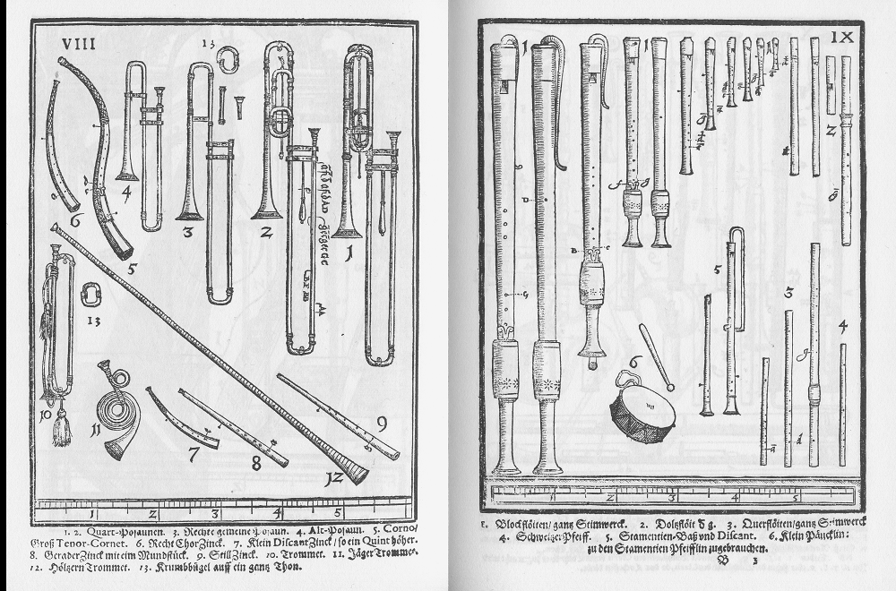

Syntagma musicum, volumen 2
Apunte 017
Inicio > Blog Bitácora de un músico > Apunte 017
Cuando las imágenes se convirtieron en organología
Entre 1614/15 y 1620, el compositor y maestro de capilla alemán Michael Praetorius publicó la obra multivolumen Syntagma musicum, uno de los compendios musicales más detallados de principios del siglo XVII. El segundo volumen, De organographia (1619), constituye el núcleo organológico del proyecto. Describe los instrumentos utilizados en Alemania y otros territorios, aborda su construcción, afinación, práctica en conjunto y contexto interpretativo, y lo hace en alemán en lugar de latín, dirigiéndose tanto a intérpretes como a eruditos.
Sin embargo, el componente más trascendental de este volumen no es el textual.
En 1620, Praetorius publicó el Theatrum Instrumentorum, un suplemento independiente de De organographia: una colección de láminas grabadas que representan instrumentos con gran detalle y proporción. Estas imágenes no solo ilustraron el texto, sino que transformaron la manera de conocer los instrumentos.
El instrumento como forma visible
En la interpretación, un instrumento existe como acción: presión de la respiración, fricción del arco, fuerza de pulsación, proyección espacial, función social. En las láminas del Theatrum, el instrumento se convierte en un objeto discreto, aislado del intérprete y del contexto. Se lo representa como contorno, dimensión y estructura compositiva.
Desvinculado del gesto, el instrumento parece estable. Colocado junto a otros en la misma superficie grabada, se vuelve comparable. Y esa comparación genera orden.
Las láminas presentan chirimías, violas, cornetas, sacabuches, flautas dulces, laúdes y teclados dispuestos sistemáticamente. La mirada se desplaza lateralmente a través de las familias. Las similitudes y diferencias se hacen legibles mediante la silueta y la escala. La longitud, el calibre, la curvatura, el número de cuerdas y la forma del pabellón se hacen visibles y medibles.
El instrumento ya no se escucha, principalmente. Se ve.
El teatro como epistemología
El título Theatrum Instrumentorum no es meramente estético. La Europa de principios de la Edad Moderna produjo numerosos "teatros" del conocimiento: atlas teatrales, teatros anatómicos, gabinetes de curiosidades dispuestos para la contemplación... El conocimiento se organizaba espacialmente antes de ser cuantificado científicamente.
Praetorius participa de esa cultura epistémica. Los instrumentos se exhiben, no se interpretan. La página se convierte en escenario. El lector se convierte en espectador.
Una vez que los instrumentos se presentan como objetos, las preguntas cambian. En lugar de preguntarse cómo interactúan acústicamente en conjunto, el espectador se pregunta cómo son, cuánto miden, o en qué se diferencian estructuralmente.
La forma comienza a preceder al sonido como dato primario. Esta disciplina visual se convierte en la base de la organología posterior.
Antes de la clasificación moderna
Praetorius no ofrece un sistema taxonómico moderno en el sentido que posteriormente usaron Hornbostel y Sachs (1914). Sus agrupaciones se basan en familias prácticas y contextos de uso, más que en un principio acústico estricto. Sin embargo, el impulso hacia la clasificación es inconfundible.
Los instrumentos se agrupan por tipo. Los tipos se tratan como estables. La estabilidad se presenta como una propiedad inherente.
La placa grabada fomenta la creencia de que los instrumentos pueden conocerse a través de su morfología. Esta creencia se convierte en una de las raíces genealógicas de la organología museística moderna.
En el siglo XIX, los instrumentos se coleccionaban, catalogaban y exhibían siguiendo precisamente esta lógica: aislados, alineados, medidos y etiquetados. Praetorius anticipa esta perspectiva.
Reconstrucción y fosilización
La extraordinaria precisión de las placas del Theatrum las hizo indispensables para los restauradores y los fabricantes de instrumentos de música antigua. Los constructores del siglo XX se basaron en estos grabados para reconstruir cornetas, chirimías y violas.
Por lo tanto, las placas son a la vez archivo y plano.
Sin embargo, el grabado captura solo un momento en la evolución del instrumento. Congela el diseño en una única imagen canónica. La variabilidad, la desviación local y la modificación efímera desaparecen. Lo que sobrevive es la forma del modelo. La autoridad visual corre el riesgo de fosilizarse.
Orden visual y ausencia sonora
Los grabados son silenciosos. No capturan la inestabilidad de la afinación, la variación regional del diámetro del tubo, la fragilidad de la lengüeta, la postura de interpretación ni el equilibrio del conjunto. No pueden registrar la práctica microtonal ni el comportamiento dinámico. Conservan el contorno, no la presión sonora.
Esto no es un fallo de Praetorius. Es una limitación estructural del conocimiento visual.
Pero la consecuencia es duradera. La organología en Europa se desarrolló primero como óptica y luego como acústica. El instrumento se definió por lo que se pudo dibujar antes de ser analizado por lo que se pudo oír.
La clasificación comienza con la vista.
Genealogía de vitrina de museo
Mucho antes de que los museos modernos exhibieran instrumentos tras un vidrio, el grabado en madera creó una vitrina conceptual. El instrumento se extraía de su contexto y se alineaba sobre un fondo neutro.
El museo hereda esta lógica. Fondo neutro. Vista lateral. Silueta nítida. Proporción medida.
Cuatro siglos después, el método persiste. El Syntagma musicum no se limita a documentar los instrumentos. Los escenifica. Y enseña al lector cómo observarlos.
Lecturas
- Baines, Anthony (1992). The Oxford Companion to Musical Instruments. Oxford: Oxford University Press.
- Kartomi, Margaret J. (1990). On Concepts and Classifications of Musical Instruments. Chicago: University of Chicago Press.
- Lee, Deborah (2020). Hornbostel-Sachs Classification of Musical Instruments. Knowledge Organization, 47 (1), pp. 72-91.
- Zeller, Matthew (2019). Reconstructing Lost Instruments: Praetorius's Syntagma musicum and the Violin Family c. 1619. De musica disserenda, 15 (1-2), pp. 137-158.